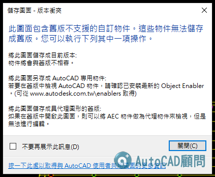

因為目前AutoCAD版本眾多，有時候dwg會由Autodesk其他套裝軟體產生(如:AutoCAD Architecture 或 AutoCAD MEP)
當你使用AutoCAD開啟會顯示「此圖面包含舊版不支援的自訂物件訊息」，而這AEC Objects正是由 AutoCAD Architecture 及 AutoCAD MEP 等軟體產生的物件。
所以AutoCAD會要求你可以前往下載「AEC Objects」
但是原廠提示的網頁是無效的...怪怪的
代碼:
將此圖面另存成 AutoCAD 專用物件:
若要在舊版中檢視 AutoCAD 物件，請確認已安裝最新的 Object Enabler。(可從 www.autodesk.com.tw\enablers 取得)
其實你可以勾選不再提示，忽略他就好
但是如果跟我一樣有強迫症想要解決，可以透過一個預設指令功能
輸入 EXPORTTOAUTOCAD(指令) 或 AECTOACAD(指令)
然後會建立新「DWG檔案」，並將所有「AEC物件」分解為基本「AutoCAD物件」。
以後就不再會有這個AEC訊息提示～
✨6分37秒處有講解 👉 https://youtu.be/1QiLO3jsFgo?t=397
[F1說明]在AutoCAD中保存時，此圖形包含以前版本中不支持的自定義對象
[F1說明]EXPORTTOAUTOCAD (指令)
http://help.autodesk.com/view/ACD/2020/CHT/?guid=GUID-86C80CA1-F237-4AE6-8A43-2E9CA06A03A8
[F1說明]AECTOACAD(指令)
http://help.autodesk.com/view/ACD/2020/CHT/?guid=GUID-2534F06D-1161-4108-BA27-CED51B05AE2A